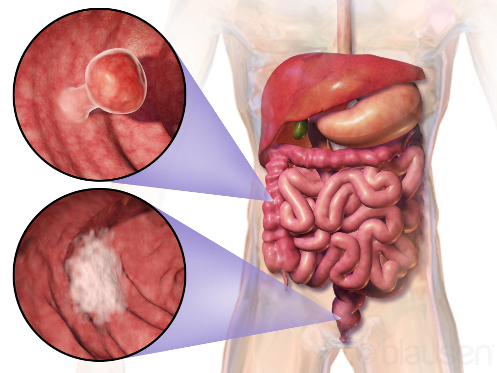

Colorectal cancer

SYMPTOMS:
Colorectal cancer may not present with any symptoms, especially in the early stages. If you do experience symptoms during the early stages, they may include:
- constipation
-
diarrhea
-
changes in stool color
-
changes in stool shape, such as narrowed stool
-
blood in the stool
-
bleeding from the rectum
-
excessive gas
-
abdominal cramps
-
abdominal pain
CAUSES
- Researchers are still studying the causes of colorectal cancer.
-
Cancer may be caused by genetic mutations, either inherited or acquired. These mutations don’t guarantee you’ll develop colorectal cancer, but they do increase your chances.
-
Some mutations may cause abnormal cells to accumulate in the lining of the colon, forming polyps. These are small, benign growths.
-
Removing these growths through surgery can be a preventive measure. Untreated polyps can become cancerous.